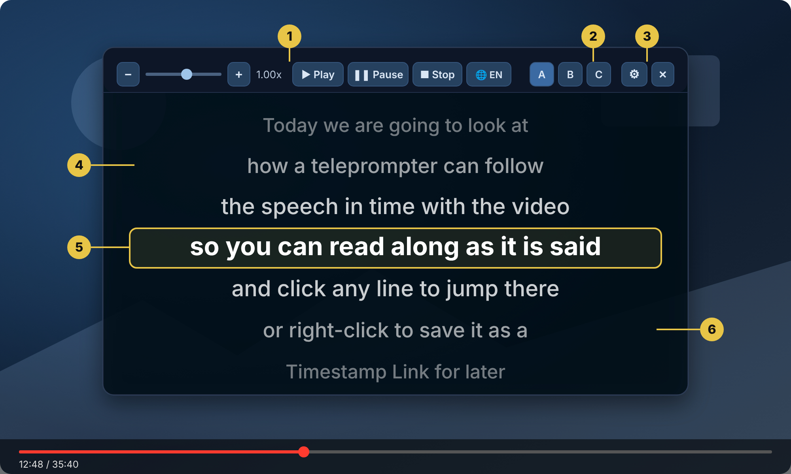

A floating panel that scrolls the Transcript over the picture in time with the speech. Read along as it is said, jump to any line with a click and make the look entirely your own
The Teleprompter opens in its own panel, separate from the main overlay. The line being spoken is highlighted and the lines around it scroll past, so you always know exactly where you are

An illustration of the Teleprompter panel (your own colours, fonts and layout will differ)
1. Speed and transport — Playback speed slider with − and +, plus Play, Pause and Stop. Double-click the slider to return to 1.00x. A language button switches the caption language
2. Profiles A / B / C — Short-press to recall a saved look, long-press to save the current one
3. Settings (⚙) and Close (✕) — Hover over the Teleprompter to reveal them
4. Lines before — The lines just spoken, smaller and fainter the further back they are
5. The active line — The line being spoken now, with an optional highlight and border
6. Lines after — The lines coming up, so you can read ahead
Getting started
Open it in one click
Load a Transcript, then click Teleprompter in the main panel
Press Play and the text follows the video. Hover over the Teleprompter to reveal the gear (settings) and close buttons
Click any line to jump the video to that moment (this can be switched off with the Clickable lines setting)
Right-click a line to save it as a Timestamp Link. It is added to your list even if it never matched a search
Move and resize the panel wherever suits you. Its position is remembered
If you would rather have the Teleprompter on its own, tick Close MainUI when Teleprompter opens in Settings (⚙ in the top bar)
Settings
Make it yours
Click the gear to open the settings. Everything updates live and is saved automatically. Use the 1-column or 2-column layout button, whichever suits your screen
Lines before / after — Show from 0 to 3 lines either side of the active line
Font size, colour and bold — Text from 12 to 72 px in any colour
Scale font with panel — The text grows or shrinks as you resize the panel
Text shadow — Keeps the text readable over bright pictures, with its own colour
Active line highlight and border — A background and an outline, each with its own colour
Cascade — Lines other than the active one scale down and fade with distance. Set how much with two sliders
Background — An optional solid panel with its own colour and opacity
Clickable lines — Choose whether a click on a line jumps the video
Sync offset — Coarse (seconds) and fine (milliseconds) sliders for captions that run early or late
Anchor to video — The panel follows the video player while you scroll the page (Normal and Cinema view only)
Profiles
Three looks, one click
Profiles A, B and C each remember your settings and the panel's position. Short-press a profile to recall it and long-press to save the current settings into it. The same three buttons sit on the Teleprompter's own top bar, so you can switch without opening Settings
For example, you could use each profile for a different YouTube view mode (Normal, Cinema or Fullscreen). With Auto-switch ticked, the right profile is recalled automatically when the view mode changes
Style examples
From high-contrast to bright highlights
Examples of different Teleprompter appearances, from high-contrast dark panels to bright highlighted styles
Ideas
What people use it for
Reading along — Follow a talk as it is spoken, a richer alternative to subtitles
Voice-overs and practice — Rehearse a delivery with the words scrolling in time with the video
Learning a language — Read along at your own pace and switch the caption language from the Teleprompter
Singing along — Karaoke for any video that has captions
Watching from a distance — Make the text large and let it scroll across the picture
Tips
Get the best from it
Tick Scale font with panel and resize until the text feels right for your distance
A sync offset you set once applies to seeking, Following, the Teleprompter and exports
Long-press a profile to save your look the moment it feels right